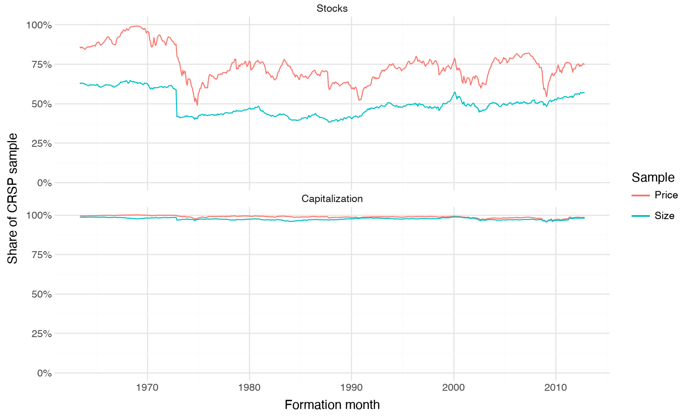

import polars as pl
from era_pl import load_parquet, ptime
from eap_pl import (
build_book_to_market, build_momentum, build_sizes, get_ff_factors,
monthly_panel, rolling_ols,
)
from eap_pl._skewness import rolling_skewness
first = pl.date(1963, 6, 1)
last = pl.date(2012, 11, 1)
keys = ["permno", "month"]
vintage = "201406"
daily_factors = get_ff_factors("daily", vintage=vintage)
monthly_factors = get_ff_factors("monthly", vintage=vintage)
monthly = (
load_parquet("msf", "crsp")
.filter(pl.col("date").is_between(first.dt.offset_by("-59mo"), last.dt.month_end()))
.select("permno", "ret", date=pl.col("date").dt.month_start(), price=pl.col("altprc").abs())
)
daily = (
load_parquet("dsf", "crsp")
.filter(pl.col("date").is_between(first, last.dt.month_end()))
.select("permno", "date", "ret", "prc", "vol")
)16 Liquid Samples
Following Chapter 16 of Bali et al. (2016), we examine how price and size screens change the distribution of stock characteristics and their relation to future returns. We use June 1963 through November 2012 as formation months and July 1963 through December 2012 as holding months.
16.1 Screens
The CRSP sample consists of U.S. common stocks. Let \(P_{i,t}\) be the absolute value of the month-end alternate price (altprc), \(C_{i,t}\) the month-end market capitalization, and \(q_{0.10,t}^{\mathrm{NYSE}}\) the 10th percentile of capitalization among NYSE common stocks in the full CRSP sample. The screens are
\[ \begin{aligned} \mathcal P_t &= \{i\in\mathcal U_t : 5 \le P_{i,t} \le 1000\},\\ \mathcal S_t &= \{i\in\mathcal P_t : C_{i,t} \ge q_{0.10,t}^{\mathrm{NYSE}}\}, \end{aligned} \tag{16.1}\]
where \(\mathcal U_t\) is the CRSP sample in month \(t\). The price screen uses nominal dollars. Compute the NYSE breakpoint before applying the price screen.
The characteristic definitions follow the preceding chapters. We use the 12-month daily beta, one-month Amihud illiquidity, five-year monthly co-skewness and idiosyncratic skewness, and one-month daily Fama–French idiosyncratic volatility. Size is the natural logarithm of nominal market capitalization in millions of dollars. Next-month excess returns include the delisting adjustments described in Section 7.2.
with ptime():
sizes = build_sizes()
formation = (
monthly_panel(sizes.select(*keys, "cap", "log_cap", "exchcd"), first, last,
monthly_factors=monthly_factors)
.join(build_book_to_market(sizes).select(*keys, "bm"), on=keys, how="left", validate="1:1")
.join(build_momentum(first, last).select(*keys, "mom"), on=keys, how="left", validate="1:1")
.join(monthly.select(
"permno", "price", month="date",
rev=pl.when(pl.col("ret").is_finite()).then(100 * pl.col("ret")),
).collect(), on=keys, how="left", validate="1:1")
)
anchors = formation.select(keys)
illiquidity = (
daily.filter(
pl.all_horizontal(pl.col("ret", "prc", "vol").is_finite()),
pl.col("prc") > 0,
pl.col("vol") > 0,
)
.with_columns(month=pl.col("date").dt.month_start())
.group_by(keys)
.agg(illiq=(1e6 * pl.col("ret").abs() / (pl.col("prc") * pl.col("vol"))).mean(),
days=pl.len())
.filter(pl.col("days") >= 15)
.select(*keys, "illiq")
.collect()
)
skew = rolling_skewness(anchors, monthly, monthly_factors, {"5y": (60, 24)})
daily_excess = (
daily.join(daily_factors.lazy(), on="date", how="left", validate="m:1")
.with_columns(excess=pl.col("ret") - pl.col("rf"))
)
idio = rolling_ols(daily_excess, y="excess", x=["mktrf", "smb", "hml"],
group_by="permno", date_col="date", anchors=anchors,
months=1, min_obs=15).select(
*keys, idio_vol=pl.col("rmse") * (100 * 252**0.5),
)
panel = (
formation.join(illiquidity, on=keys, how="left", validate="1:1")
.join(skew.select(*keys, "coskew_5y", "idioskew_5y"), on=keys, validate="1:1")
.join(idio, on=keys, validate="1:1")
)
nyse_cutoff = (
panel.filter((pl.col("exchcd") == 1) & pl.col("cap").is_finite())
.group_by("month").agg(cutoff=pl.col("cap").quantile(0.1, interpolation="linear"))
)
price_sample = panel.filter(pl.col("price").is_finite() & pl.col("price").is_between(5, 1000))
size_sample = (
price_sample.join(nyse_cutoff, on="month", validate="m:1")
.filter(pl.col("cap").is_finite() & (pl.col("cap") >= pl.col("cutoff")))
)
samples = {"CRSP": panel, "Price": price_sample, "Size": size_sample}Wall time: 25.604 s
from plotnine_polars import aes
def coverage_totals(sample):
return sample.group_by("month").agg(stocks=pl.len(), capitalization=pl.col("cap").sum())
full_totals = coverage_totals(panel)
coverage = pl.concat([
coverage_totals(sample).join(full_totals, on="month", validate="1:1", suffix="_full")
.select(
"month", sample=pl.lit(name),
Stocks=pl.col("stocks") / pl.col("stocks_full"),
Capitalization=pl.col("capitalization") / pl.col("capitalization_full"),
)
for name, sample in samples.items() if name != "CRSP"
]).unpivot(
index=["month", "sample"], variable_name="measure", value_name="share",
).with_columns(
pl.col("measure").cast(pl.Enum(["Stocks", "Capitalization"])),
).sort("month")
(
coverage.ggplot(aes(x="month", y="share", color="sample"))
.geom_line()
.facet_wrap("measure", ncol=1)
.scale_y_continuous(limits=(0, 1), labels=lambda values: [f"{value:.0%}" for value in values])
.scale_x_date(date_breaks="10 years", date_labels="%Y")
.labs(x="Formation month", y="Share of CRSP sample", color="Sample")
.theme_minimal()
.add_theme(figure_size=(8.2, 5))
)
16.2 Summary Statistics
We compute descriptive statistics within each formation month, then average across months. Each row uses all available observations of that characteristic within the stated sample.
from eap_pl import mean_cross_sections
variables = {
"beta": "Beta", "cap": "Market cap ($ millions)", "log_cap": "Size",
"bm": "Book-to-market", "mom": "Momentum", "rev": "Reversal",
"illiq": "Illiquidity", "coskew_5y": "Co-skewness",
"idioskew_5y": "Idiosyncratic skewness", "idio_vol": "Idiosyncratic volatility",
}
regressors = {term: label for term, label in variables.items() if term != "cap"}
for sample in samples.values():
show_table(mean_cross_sections(sample, variables))| Measure | Mean | SD | Skew | Kurt. | Min | 5% | 25% | Median | 75% | 95% | Max | n |
|---|---|---|---|---|---|---|---|---|---|---|---|---|
| Beta | 0.78 | 0.61 | 0.49 | 1.47 | -2.16 | -0.05 | 0.35 | 0.71 | 1.15 | 1.89 | 3.90 | 4439 |
| Market cap ($ millions) | 1101.90 | 5572.44 | 17.72 | 459.47 | 0.50 | 6.13 | 28.87 | 106.79 | 446.75 | 4112.86 | 161217.89 | 4792 |
| Size | 4.33 | 1.92 | 0.38 | -0.08 | -1.19 | 1.46 | 2.93 | 4.16 | 5.57 | 7.75 | 11.48 | 4792 |
| Book-to-market | 0.94 | 1.16 | 9.93 | 270.87 | 0.01 | 0.15 | 0.41 | 0.72 | 1.15 | 2.33 | 32.61 | 3413 |
| Momentum | 14.12 | 58.40 | 4.12 | 61.69 | -89.41 | -49.89 | -17.12 | 5.69 | 31.97 | 102.72 | 1064.02 | 4424 |
| Reversal | 1.21 | 15.49 | 3.11 | 59.52 | -67.35 | -18.93 | -6.27 | 0.06 | 6.92 | 24.20 | 266.45 | 4748 |
| Illiquidity | 3.79 | 27.74 | 22.16 | 827.94 | 0.00 | 0.01 | 0.05 | 0.26 | 1.35 | 13.39 | 1174.73 | 3603 |
| Co-skewness | -1.20 | 9.53 | 1.94 | 71.64 | -81.74 | -14.61 | -5.27 | -1.11 | 2.75 | 11.79 | 131.94 | 3994 |
| Idiosyncratic skewness | 0.64 | 0.81 | 1.42 | 4.80 | -2.64 | -0.37 | 0.14 | 0.51 | 0.98 | 2.13 | 6.14 | 3994 |
| Idiosyncratic volatility | 47.90 | 40.28 | 4.30 | 61.40 | 1.21 | 12.01 | 24.02 | 37.72 | 59.27 | 116.33 | 748.60 | 4759 |
| Measure | Mean | SD | Skew | Kurt. | Min | 5% | 25% | Median | 75% | 95% | Max | n |
|---|---|---|---|---|---|---|---|---|---|---|---|---|
| Beta | 0.83 | 0.58 | 0.63 | 0.62 | -1.05 | 0.04 | 0.41 | 0.76 | 1.17 | 1.90 | 3.32 | 3277 |
| Market cap ($ millions) | 1450.20 | 6380.39 | 15.55 | 350.61 | 2.76 | 16.73 | 65.61 | 200.01 | 704.61 | 5499.60 | 161217.89 | 3529 |
| Size | 4.97 | 1.69 | 0.50 | 0.02 | 0.71 | 2.50 | 3.73 | 4.78 | 6.04 | 8.01 | 11.48 | 3529 |
| Book-to-market | 0.85 | 0.87 | 7.51 | 143.13 | 0.01 | 0.16 | 0.41 | 0.69 | 1.06 | 1.94 | 18.72 | 2483 |
| Momentum | 20.93 | 55.22 | 4.48 | 64.27 | -76.48 | -34.50 | -7.83 | 11.24 | 35.79 | 104.96 | 972.76 | 3266 |
| Reversal | 1.85 | 12.23 | 2.46 | 40.41 | -48.92 | -14.29 | -4.71 | 0.73 | 6.90 | 21.21 | 168.31 | 3498 |
| Illiquidity | 0.73 | 1.88 | 8.53 | 165.42 | 0.00 | 0.01 | 0.04 | 0.16 | 0.62 | 3.39 | 37.70 | 2885 |
| Co-skewness | -0.87 | 7.64 | 0.52 | 16.50 | -59.03 | -11.89 | -4.43 | -0.85 | 2.57 | 10.05 | 76.16 | 2960 |
| Idiosyncratic skewness | 0.52 | 0.71 | 1.39 | 5.48 | -2.38 | -0.39 | 0.09 | 0.42 | 0.83 | 1.78 | 5.60 | 2960 |
| Idiosyncratic volatility | 36.85 | 23.39 | 3.28 | 46.43 | 1.25 | 11.88 | 21.56 | 31.86 | 46.36 | 77.61 | 362.76 | 3506 |
| Measure | Mean | SD | Skew | Kurt. | Min | 5% | 25% | Median | 75% | 95% | Max | n |
|---|---|---|---|---|---|---|---|---|---|---|---|---|
| Beta | 0.95 | 0.55 | 0.71 | 0.65 | -0.63 | 0.21 | 0.54 | 0.86 | 1.26 | 1.99 | 3.27 | 2215 |
| Market cap ($ millions) | 2083.97 | 7593.67 | 12.82 | 233.90 | 88.06 | 102.43 | 187.22 | 416.85 | 1218.99 | 7824.98 | 161217.89 | 2339 |
| Size | 5.84 | 1.33 | 0.92 | 0.53 | 4.07 | 4.21 | 4.78 | 5.57 | 6.65 | 8.37 | 11.48 | 2339 |
| Book-to-market | 0.75 | 0.72 | 7.49 | 148.32 | 0.01 | 0.16 | 0.38 | 0.63 | 0.95 | 1.65 | 14.10 | 1753 |
| Momentum | 21.83 | 52.72 | 4.22 | 53.85 | -72.70 | -31.36 | -5.76 | 12.54 | 36.13 | 102.50 | 823.92 | 2209 |
| Reversal | 1.85 | 11.14 | 1.72 | 21.49 | -44.19 | -13.41 | -4.34 | 0.97 | 6.85 | 19.68 | 119.39 | 2325 |
| Illiquidity | 0.24 | 0.53 | 12.01 | 290.29 | 0.00 | 0.00 | 0.02 | 0.08 | 0.25 | 0.97 | 9.60 | 2130 |
| Co-skewness | -0.50 | 6.88 | 0.24 | 13.34 | -51.82 | -10.46 | -3.76 | -0.50 | 2.66 | 9.41 | 55.57 | 2045 |
| Idiosyncratic skewness | 0.41 | 0.65 | 1.42 | 6.38 | -2.23 | -0.43 | 0.03 | 0.34 | 0.70 | 1.52 | 5.14 | 2045 |
| Idiosyncratic volatility | 33.30 | 19.49 | 2.87 | 31.66 | 1.80 | 12.12 | 20.41 | 29.12 | 41.44 | 67.65 | 260.17 | 2329 |
16.3 Correlations and Persistence
For each sample we average cross-sectional correlations across formation months. Pearson correlations are based on pairwise complete cases and winsorize each characteristic at the 0.5th and 99.5th percentiles. Spearman correlations use the original ranks.1
from eap_pl import correlation_matrix, period_correlations
for sample in samples.values():
means = (
period_correlations(sample, regressors, "month")
.select(pl.exclude("month").mean()).row(0, named=True)
)
show_table(correlation_matrix(means, regressors))| Measure | Beta | Size | Book-to-market | Momentum | Reversal | Illiquidity | Co-skewness | Idiosyncratic skewness | Idiosyncratic volatility |
|---|---|---|---|---|---|---|---|---|---|
| Beta | 0.33 | -0.23 | 0.04 | -0.01 | -0.32 | 0.08 | -0.06 | 0.17 | |
| Size | 0.31 | -0.26 | 0.25 | 0.11 | -0.92 | 0.14 | -0.36 | -0.47 | |
| Book-to-market | -0.19 | -0.27 | 0.04 | 0.03 | 0.25 | 0.02 | 0.03 | -0.02 | |
| Momentum | 0.07 | 0.18 | 0.02 | 0.04 | -0.24 | 0.00 | 0.02 | -0.21 | |
| Reversal | -0.02 | 0.07 | 0.02 | 0.02 | -0.08 | 0.01 | -0.02 | 0.00 | |
| Illiquidity | -0.15 | -0.42 | 0.18 | -0.16 | -0.04 | -0.13 | 0.32 | 0.54 | |
| Co-skewness | 0.06 | 0.11 | 0.02 | -0.00 | 0.00 | -0.04 | -0.10 | -0.07 | |
| Idiosyncratic skewness | -0.04 | -0.34 | 0.06 | 0.07 | 0.03 | 0.16 | -0.08 | 0.25 | |
| Idiosyncratic volatility | 0.08 | -0.45 | 0.07 | -0.16 | 0.10 | 0.48 | -0.05 | 0.24 |
| Measure | Beta | Size | Book-to-market | Momentum | Reversal | Illiquidity | Co-skewness | Idiosyncratic skewness | Idiosyncratic volatility |
|---|---|---|---|---|---|---|---|---|---|
| Beta | 0.32 | -0.25 | 0.01 | -0.02 | -0.33 | 0.08 | -0.03 | 0.28 | |
| Size | 0.30 | -0.26 | 0.08 | 0.04 | -0.90 | 0.14 | -0.30 | -0.33 | |
| Book-to-market | -0.21 | -0.25 | 0.04 | 0.03 | 0.24 | 0.02 | 0.04 | -0.08 | |
| Momentum | 0.06 | 0.03 | 0.04 | 0.00 | -0.11 | -0.03 | 0.09 | -0.06 | |
| Reversal | -0.02 | 0.00 | 0.03 | 0.01 | -0.03 | -0.00 | 0.01 | 0.08 | |
| Illiquidity | -0.25 | -0.50 | 0.19 | -0.08 | 0.00 | -0.13 | 0.26 | 0.39 | |
| Co-skewness | 0.08 | 0.12 | 0.02 | -0.03 | -0.00 | -0.06 | -0.09 | -0.05 | |
| Idiosyncratic skewness | -0.01 | -0.28 | 0.05 | 0.14 | 0.05 | 0.15 | -0.07 | 0.18 | |
| Idiosyncratic volatility | 0.23 | -0.32 | -0.01 | 0.02 | 0.18 | 0.29 | -0.04 | 0.19 |
| Measure | Beta | Size | Book-to-market | Momentum | Reversal | Illiquidity | Co-skewness | Idiosyncratic skewness | Idiosyncratic volatility |
|---|---|---|---|---|---|---|---|---|---|
| Beta | 0.09 | -0.20 | 0.02 | -0.02 | -0.22 | 0.06 | 0.05 | 0.40 | |
| Size | 0.07 | -0.13 | 0.04 | 0.02 | -0.85 | 0.11 | -0.23 | -0.34 | |
| Book-to-market | -0.16 | -0.14 | 0.03 | 0.02 | 0.15 | 0.05 | -0.01 | -0.14 | |
| Momentum | 0.07 | -0.01 | 0.02 | 0.01 | -0.08 | -0.04 | 0.10 | -0.03 | |
| Reversal | -0.01 | -0.01 | 0.03 | 0.02 | -0.02 | -0.00 | 0.01 | 0.08 | |
| Illiquidity | -0.18 | -0.42 | 0.13 | -0.06 | -0.00 | -0.11 | 0.19 | 0.30 | |
| Co-skewness | 0.06 | 0.09 | 0.05 | -0.03 | -0.01 | -0.05 | -0.07 | -0.04 | |
| Idiosyncratic skewness | 0.07 | -0.21 | 0.01 | 0.15 | 0.05 | 0.11 | -0.05 | 0.15 | |
| Idiosyncratic volatility | 0.36 | -0.32 | -0.08 | 0.05 | 0.16 | 0.17 | -0.03 | 0.17 |
For persistence, match each stock’s characteristic in month \(t\) to its value in month \(t+\tau\) within the same sample. Average the monthly winsorized Pearson correlations. Omit lags shorter than a characteristic’s measurement window.
from eap_pl import persistence
lags = [1, 3, 6, 12, 24, 36, 48, 60, 120]
shortest = {"beta": 12, "mom": 12, "coskew_5y": 60, "idioskew_5y": 60}
for sample in samples.values():
show_table(persistence(sample, variables, lags).with_columns(
pl.when(pl.col("Lag (months)") >= minimum)
.then(pl.col(variables[term])).alias(variables[term])
for term, minimum in shortest.items()
))| Lag (months) | Beta | Market cap ($ millions) | Size | Book-to-market | Momentum | Reversal | Illiquidity | Co-skewness | Idiosyncratic skewness | Idiosyncratic volatility |
|---|---|---|---|---|---|---|---|---|---|---|
| 1 | 0.998 | 0.997 | 0.983 | -0.045 | 0.801 | 0.643 | ||||
| 3 | 0.995 | 0.991 | 0.950 | 0.014 | 0.736 | 0.598 | ||||
| 6 | 0.990 | 0.983 | 0.899 | 0.011 | 0.671 | 0.564 | ||||
| 12 | 0.630 | 0.980 | 0.967 | 0.801 | 0.022 | 0.018 | 0.579 | 0.522 | ||
| 24 | 0.551 | 0.959 | 0.939 | 0.670 | -0.036 | 0.011 | 0.450 | 0.460 | ||
| 36 | 0.503 | 0.942 | 0.918 | 0.583 | -0.021 | 0.011 | 0.377 | 0.423 | ||
| 48 | 0.467 | 0.925 | 0.902 | 0.522 | -0.018 | 0.009 | 0.332 | 0.397 | ||
| 60 | 0.436 | 0.909 | 0.888 | 0.475 | -0.040 | 0.005 | 0.307 | 0.034 | 0.215 | 0.381 |
| 120 | 0.351 | 0.842 | 0.844 | 0.366 | 0.006 | 0.009 | 0.245 | 0.046 | 0.198 | 0.338 |
| Lag (months) | Beta | Market cap ($ millions) | Size | Book-to-market | Momentum | Reversal | Illiquidity | Co-skewness | Idiosyncratic skewness | Idiosyncratic volatility |
|---|---|---|---|---|---|---|---|---|---|---|
| 1 | 0.998 | 0.998 | 0.987 | -0.031 | 0.791 | 0.571 | ||||
| 3 | 0.994 | 0.993 | 0.962 | 0.014 | 0.736 | 0.532 | ||||
| 6 | 0.989 | 0.987 | 0.925 | 0.011 | 0.691 | 0.499 | ||||
| 12 | 0.726 | 0.979 | 0.976 | 0.853 | 0.021 | 0.013 | 0.630 | 0.463 | ||
| 24 | 0.650 | 0.959 | 0.955 | 0.750 | -0.042 | 0.009 | 0.548 | 0.411 | ||
| 36 | 0.600 | 0.942 | 0.939 | 0.680 | -0.028 | 0.007 | 0.501 | 0.378 | ||
| 48 | 0.562 | 0.925 | 0.924 | 0.629 | -0.024 | 0.008 | 0.465 | 0.353 | ||
| 60 | 0.530 | 0.909 | 0.912 | 0.583 | -0.036 | 0.004 | 0.443 | 0.051 | 0.151 | 0.336 |
| 120 | 0.421 | 0.837 | 0.859 | 0.458 | 0.006 | 0.010 | 0.377 | 0.055 | 0.145 | 0.271 |
| Lag (months) | Beta | Market cap ($ millions) | Size | Book-to-market | Momentum | Reversal | Illiquidity | Co-skewness | Idiosyncratic skewness | Idiosyncratic volatility |
|---|---|---|---|---|---|---|---|---|---|---|
| 1 | 0.998 | 0.997 | 0.987 | -0.025 | 0.816 | 0.563 | ||||
| 3 | 0.994 | 0.991 | 0.961 | 0.013 | 0.761 | 0.535 | ||||
| 6 | 0.989 | 0.982 | 0.924 | 0.012 | 0.718 | 0.503 | ||||
| 12 | 0.729 | 0.979 | 0.965 | 0.850 | 0.035 | 0.014 | 0.663 | 0.472 | ||
| 24 | 0.647 | 0.958 | 0.937 | 0.745 | -0.036 | 0.009 | 0.584 | 0.423 | ||
| 36 | 0.592 | 0.939 | 0.914 | 0.672 | -0.021 | 0.009 | 0.530 | 0.392 | ||
| 48 | 0.551 | 0.922 | 0.895 | 0.619 | -0.014 | 0.010 | 0.491 | 0.370 | ||
| 60 | 0.517 | 0.904 | 0.878 | 0.574 | -0.028 | 0.007 | 0.461 | 0.047 | 0.104 | 0.353 |
| 120 | 0.400 | 0.826 | 0.811 | 0.454 | 0.003 | 0.010 | 0.385 | 0.053 | 0.100 | 0.283 |
16.4 Portfolio Returns
Sort each sample into deciles every month using its own breakpoints. For each holding month, the high-minus-low portfolio return is
\[ D_{t+1} = r_{10,t+1} - r_{1,t+1}, \tag{16.2}\]
where \(r_{j,t+1}\) is the excess return on decile \(j\). We form both value-weighted and equal-weighted portfolios. The Fama–French–Carhart alpha regresses \(D_{t+1}\) on the market, size, value, and momentum factors. The liquidity-augmented model adds the traded Pástor–Stambaugh factor. For portfolios sorted on market capitalization, book-to-market, or momentum, we omit the corresponding factor from both models. Inference uses six Newey–West lags. The traded liquidity factor begins in January 1968, so the FFCPS regressions use holding months from January 1968 through December 2012.
from eap_pl import format_fit, hac, load_pastor_stambaugh_2013
from eap_pl._portfolios import assign_portfolio, portfolio_months, spread
momentum_factor = get_ff_factors("momentum", vintage=vintage)
factor_returns = (
monthly_factors.join(momentum_factor, on="date", validate="1:1")
.select(month="date", mkt=100 * pl.col("mktrf"), smb=100 * pl.col("smb"),
hml=100 * pl.col("hml"), mom_factor=100 * pl.col("mom"))
.join(load_pastor_stambaugh_2013().select(month="date", ps=100 * pl.col("psl")),
on="month", how="left", validate="1:1")
)
sorts = {term: label for term, label in variables.items() if term != "log_cap"}
omitted_factors = {"cap": "smb", "bm": "hml", "mom": "mom_factor"}
def portfolio_tables(sample):
rows = {"VW": [], "EW": []}
for variable, label in sorts.items():
members = assign_portfolio(sample.filter(pl.col(variable).is_finite()), variable, 10, "month")
monthly_returns = portfolio_months(members, ["portfolio"])
means = monthly_returns.group_by("portfolio").agg(pl.col("VW", "EW").mean()).sort("portfolio")
factors = [name for name in ("mkt", "smb", "hml", "mom_factor")
if name != omitted_factors.get(variable)]
for weight in rows:
series = (
spread(monthly_returns, 10, 1, "portfolio", weight)
.select(pl.col("month").dt.offset_by("1mo"), weight)
.join(factor_returns, on="month", validate="1:1").sort("month")
)
models = {"10–1": [], "FFC alpha": factors, "FFCPS alpha": [*factors, "ps"]}
results = {
name: format_fit(hac(f"{weight} ~ " + (" + ".join(terms) or "1"),
series.drop_nulls([weight, *terms])), "Intercept")
for name, terms in models.items()
}
rows[weight].append({
"Sort variable": label,
**{str(group): f"{value:.2f}" for group, value in means.select("portfolio", weight).iter_rows()},
**results,
})
return [pl.DataFrame(rows[weight]) for weight in ("VW", "EW")]for table in portfolio_tables(samples["CRSP"]):
show_table(table)| Sort variable | 1 | 2 | 3 | 4 | 5 | 6 | 7 | 8 | 9 | 10 | 10–1 | FFC alpha | FFCPS alpha |
|---|---|---|---|---|---|---|---|---|---|---|---|---|---|
| Beta | 0.40 | 0.52 | 0.55 | 0.42 | 0.55 | 0.48 | 0.51 | 0.44 | 0.37 | 0.34 | -0.05 (-0.19) |
-0.01 (-0.05) |
-0.03 (-0.11) |
| Market cap ($ millions) | 1.49 | 0.63 | 0.55 | 0.56 | 0.58 | 0.65 | 0.66 | 0.67 | 0.63 | 0.42 | -1.07 (-3.40) |
-1.30 (-3.76) |
-1.25 (-3.55) |
| Book-to-market | 0.31 | 0.33 | 0.46 | 0.44 | 0.46 | 0.52 | 0.59 | 0.67 | 0.68 | 0.88 | 0.57 (2.47) |
0.73 (3.24) |
0.84 (3.64) |
| Momentum | -0.76 | -0.12 | 0.04 | 0.35 | 0.39 | 0.37 | 0.54 | 0.67 | 0.76 | 1.18 | 1.94 (5.38) |
2.36 (7.46) |
2.35 (6.71) |
| Reversal | 0.72 | 0.50 | 0.74 | 0.66 | 0.60 | 0.47 | 0.49 | 0.44 | 0.33 | 0.12 | -0.60 (-2.37) |
-0.77 (-3.14) |
-0.70 (-2.72) |
| Illiquidity | 0.42 | 0.54 | 0.60 | 0.62 | 0.54 | 0.58 | 0.64 | 0.66 | 0.49 | 0.25 | -0.17 (-0.65) |
-0.46 (-3.13) |
-0.51 (-3.24) |
| Co-skewness | 0.51 | 0.62 | 0.68 | 0.52 | 0.58 | 0.53 | 0.46 | 0.49 | 0.43 | 0.48 | -0.03 (-0.18) |
0.10 (0.58) |
0.05 (0.29) |
| Idiosyncratic skewness | 0.43 | 0.48 | 0.54 | 0.50 | 0.53 | 0.43 | 0.54 | 0.48 | 0.38 | 0.27 | -0.16 (-0.95) |
-0.57 (-3.59) |
-0.52 (-3.15) |
| Idiosyncratic volatility | 0.48 | 0.48 | 0.51 | 0.57 | 0.60 | 0.63 | 0.38 | 0.14 | -0.17 | -0.79 | -1.26 (-3.53) |
-1.43 (-5.38) |
-1.47 (-5.00) |
| Sort variable | 1 | 2 | 3 | 4 | 5 | 6 | 7 | 8 | 9 | 10 | 10–1 | FFC alpha | FFCPS alpha |
|---|---|---|---|---|---|---|---|---|---|---|---|---|---|
| Beta | 0.93 | 0.88 | 0.91 | 0.84 | 0.86 | 0.81 | 0.78 | 0.65 | 0.60 | 0.38 | -0.55 (-2.08) |
-0.62 (-2.91) |
-0.61 (-2.68) |
| Market cap ($ millions) | 2.03 | 0.64 | 0.54 | 0.56 | 0.59 | 0.64 | 0.66 | 0.67 | 0.63 | 0.49 | -1.54 (-4.86) |
-1.85 (-5.02) |
-1.85 (-4.90) |
| Book-to-market | 0.08 | 0.37 | 0.50 | 0.69 | 0.75 | 0.86 | 0.94 | 1.02 | 1.19 | 1.41 | 1.33 (6.13) |
1.57 (7.22) |
1.63 (6.94) |
| Momentum | 0.23 | 0.35 | 0.48 | 0.63 | 0.68 | 0.78 | 0.92 | 1.04 | 1.19 | 1.37 | 1.14 (3.63) |
1.45 (5.13) |
1.43 (4.59) |
| Reversal | 2.31 | 0.97 | 0.78 | 0.71 | 0.74 | 0.69 | 0.66 | 0.54 | 0.36 | -0.37 | -2.68 (-9.67) |
-2.93 (-8.23) |
-2.95 (-8.14) |
| Illiquidity | 0.53 | 0.63 | 0.73 | 0.76 | 0.71 | 0.71 | 0.78 | 0.81 | 0.74 | 1.11 | 0.58 (1.95) |
0.43 (2.03) |
0.43 (1.88) |
| Co-skewness | 0.97 | 0.95 | 0.86 | 0.86 | 0.81 | 0.83 | 0.73 | 0.73 | 0.81 | 0.75 | -0.22 (-1.86) |
-0.25 (-2.02) |
-0.33 (-2.42) |
| Idiosyncratic skewness | 0.80 | 0.82 | 0.82 | 0.86 | 0.85 | 0.87 | 0.91 | 0.91 | 0.75 | 0.70 | -0.10 (-0.59) |
-0.18 (-1.12) |
-0.23 (-1.41) |
| Idiosyncratic volatility | 0.62 | 0.75 | 0.86 | 0.94 | 0.93 | 0.91 | 0.86 | 0.70 | 0.57 | 0.28 | -0.34 (-0.96) |
-0.44 (-1.71) |
-0.46 (-1.70) |
for table in portfolio_tables(samples["Price"]):
show_table(table)| Sort variable | 1 | 2 | 3 | 4 | 5 | 6 | 7 | 8 | 9 | 10 | 10–1 | FFC alpha | FFCPS alpha |
|---|---|---|---|---|---|---|---|---|---|---|---|---|---|
| Beta | 0.48 | 0.55 | 0.45 | 0.50 | 0.54 | 0.48 | 0.47 | 0.46 | 0.36 | 0.36 | -0.13 (-0.42) |
-0.13 (-0.55) |
-0.15 (-0.59) |
| Market cap ($ millions) | 0.75 | 0.75 | 0.72 | 0.69 | 0.64 | 0.66 | 0.68 | 0.63 | 0.59 | 0.40 | -0.35 (-1.61) |
-0.34 (-1.63) |
-0.28 (-1.31) |
| Book-to-market | 0.35 | 0.33 | 0.49 | 0.39 | 0.48 | 0.51 | 0.53 | 0.61 | 0.68 | 0.74 | 0.38 (1.72) |
0.55 (2.49) |
0.65 (2.91) |
| Momentum | -0.41 | 0.15 | 0.31 | 0.38 | 0.32 | 0.42 | 0.57 | 0.64 | 0.80 | 1.23 | 1.64 (5.74) |
1.96 (7.12) |
1.99 (6.75) |
| Reversal | 0.48 | 0.61 | 0.71 | 0.56 | 0.51 | 0.49 | 0.44 | 0.46 | 0.26 | 0.18 | -0.29 (-1.38) |
-0.40 (-1.81) |
-0.32 (-1.31) |
| Illiquidity | 0.41 | 0.53 | 0.50 | 0.65 | 0.55 | 0.54 | 0.60 | 0.62 | 0.68 | 0.41 | 0.00 (0.02) |
-0.27 (-2.35) |
-0.27 (-2.22) |
| Co-skewness | 0.57 | 0.61 | 0.63 | 0.55 | 0.56 | 0.50 | 0.48 | 0.48 | 0.40 | 0.43 | -0.14 (-0.88) |
0.02 (0.12) |
0.01 (0.04) |
| Idiosyncratic skewness | 0.44 | 0.46 | 0.49 | 0.60 | 0.42 | 0.60 | 0.41 | 0.55 | 0.41 | 0.33 | -0.11 (-0.76) |
-0.54 (-4.36) |
-0.49 (-3.76) |
| Idiosyncratic volatility | 0.45 | 0.51 | 0.48 | 0.54 | 0.55 | 0.59 | 0.55 | 0.36 | 0.19 | -0.49 | -0.94 (-3.04) |
-1.08 (-5.40) |
-1.10 (-5.02) |
| Sort variable | 1 | 2 | 3 | 4 | 5 | 6 | 7 | 8 | 9 | 10 | 10–1 | FFC alpha | FFCPS alpha |
|---|---|---|---|---|---|---|---|---|---|---|---|---|---|
| Beta | 0.71 | 0.78 | 0.78 | 0.76 | 0.80 | 0.74 | 0.72 | 0.63 | 0.52 | 0.35 | -0.37 (-1.19) |
-0.53 (-2.53) |
-0.50 (-2.24) |
| Market cap ($ millions) | 0.78 | 0.75 | 0.72 | 0.70 | 0.65 | 0.66 | 0.69 | 0.64 | 0.60 | 0.45 | -0.33 (-1.66) |
-0.37 (-1.85) |
-0.31 (-1.53) |
| Book-to-market | 0.12 | 0.34 | 0.52 | 0.59 | 0.66 | 0.72 | 0.78 | 0.86 | 0.96 | 1.00 | 0.88 (3.87) |
1.15 (5.44) |
1.17 (5.45) |
| Momentum | -0.40 | 0.28 | 0.47 | 0.59 | 0.68 | 0.77 | 0.89 | 0.98 | 1.17 | 1.38 | 1.79 (7.40) |
2.02 (8.76) |
2.06 (8.12) |
| Reversal | 1.10 | 0.94 | 0.82 | 0.78 | 0.71 | 0.73 | 0.61 | 0.51 | 0.35 | 0.03 | -1.07 (-5.85) |
-1.11 (-5.84) |
-1.04 (-4.94) |
| Illiquidity | 0.51 | 0.62 | 0.61 | 0.75 | 0.70 | 0.70 | 0.71 | 0.75 | 0.78 | 0.58 | 0.07 (0.37) |
-0.13 (-1.02) |
-0.14 (-1.03) |
| Co-skewness | 0.70 | 0.83 | 0.79 | 0.75 | 0.77 | 0.74 | 0.68 | 0.65 | 0.70 | 0.62 | -0.08 (-0.83) |
-0.06 (-0.55) |
-0.08 (-0.69) |
| Idiosyncratic skewness | 0.70 | 0.69 | 0.75 | 0.75 | 0.76 | 0.79 | 0.73 | 0.79 | 0.67 | 0.59 | -0.11 (-0.86) |
-0.30 (-3.26) |
-0.32 (-3.20) |
| Idiosyncratic volatility | 0.60 | 0.78 | 0.81 | 0.91 | 0.92 | 0.95 | 0.82 | 0.75 | 0.43 | -0.35 | -0.96 (-3.58) |
-1.17 (-8.22) |
-1.16 (-7.62) |
for table in portfolio_tables(samples["Size"]):
show_table(table)| Sort variable | 1 | 2 | 3 | 4 | 5 | 6 | 7 | 8 | 9 | 10 | 10–1 | FFC alpha | FFCPS alpha |
|---|---|---|---|---|---|---|---|---|---|---|---|---|---|
| Beta | 0.45 | 0.41 | 0.49 | 0.47 | 0.57 | 0.50 | 0.46 | 0.38 | 0.39 | 0.36 | -0.09 (-0.29) |
-0.17 (-0.75) |
-0.22 (-0.89) |
| Market cap ($ millions) | 0.67 | 0.65 | 0.67 | 0.68 | 0.72 | 0.67 | 0.62 | 0.63 | 0.55 | 0.39 | -0.28 (-1.53) |
-0.16 (-0.97) |
-0.12 (-0.69) |
| Book-to-market | 0.32 | 0.34 | 0.45 | 0.46 | 0.42 | 0.48 | 0.50 | 0.57 | 0.65 | 0.70 | 0.38 (1.71) |
0.60 (2.73) |
0.68 (3.05) |
| Momentum | -0.26 | 0.24 | 0.39 | 0.38 | 0.37 | 0.42 | 0.52 | 0.65 | 0.79 | 1.18 | 1.44 (4.95) |
1.76 (6.25) |
1.77 (5.90) |
| Reversal | 0.42 | 0.66 | 0.65 | 0.50 | 0.49 | 0.48 | 0.41 | 0.41 | 0.31 | 0.25 | -0.17 (-0.81) |
-0.29 (-1.28) |
-0.19 (-0.79) |
| Illiquidity | 0.41 | 0.55 | 0.51 | 0.54 | 0.63 | 0.60 | 0.55 | 0.56 | 0.56 | 0.52 | 0.12 (0.73) |
-0.16 (-1.89) |
-0.17 (-1.78) |
| Co-skewness | 0.64 | 0.63 | 0.53 | 0.56 | 0.55 | 0.49 | 0.45 | 0.48 | 0.37 | 0.45 | -0.18 (-1.18) |
-0.03 (-0.19) |
-0.01 (-0.07) |
| Idiosyncratic skewness | 0.44 | 0.44 | 0.51 | 0.55 | 0.49 | 0.46 | 0.55 | 0.48 | 0.51 | 0.34 | -0.11 (-0.83) |
-0.51 (-3.97) |
-0.47 (-3.44) |
| Idiosyncratic volatility | 0.45 | 0.53 | 0.49 | 0.47 | 0.60 | 0.52 | 0.61 | 0.51 | 0.28 | -0.27 | -0.72 (-2.39) |
-0.84 (-4.27) |
-0.86 (-3.96) |
| Sort variable | 1 | 2 | 3 | 4 | 5 | 6 | 7 | 8 | 9 | 10 | 10–1 | FFC alpha | FFCPS alpha |
|---|---|---|---|---|---|---|---|---|---|---|---|---|---|
| Beta | 0.63 | 0.64 | 0.69 | 0.73 | 0.72 | 0.75 | 0.70 | 0.61 | 0.52 | 0.37 | -0.26 (-0.80) |
-0.36 (-1.69) |
-0.34 (-1.51) |
| Market cap ($ millions) | 0.66 | 0.64 | 0.67 | 0.68 | 0.72 | 0.68 | 0.63 | 0.62 | 0.56 | 0.43 | -0.23 (-1.44) |
-0.15 (-0.98) |
-0.11 (-0.69) |
| Book-to-market | 0.17 | 0.33 | 0.48 | 0.62 | 0.63 | 0.71 | 0.73 | 0.79 | 0.85 | 0.92 | 0.75 (3.18) |
1.01 (4.53) |
1.04 (4.64) |
| Momentum | -0.25 | 0.29 | 0.49 | 0.57 | 0.62 | 0.68 | 0.78 | 0.87 | 1.06 | 1.29 | 1.54 (5.97) |
1.80 (7.27) |
1.83 (6.81) |
| Reversal | 0.90 | 0.94 | 0.82 | 0.74 | 0.72 | 0.64 | 0.52 | 0.49 | 0.30 | 0.17 | -0.73 (-3.71) |
-0.80 (-3.91) |
-0.73 (-3.23) |
| Illiquidity | 0.51 | 0.61 | 0.61 | 0.66 | 0.76 | 0.74 | 0.70 | 0.69 | 0.65 | 0.54 | 0.03 (0.22) |
-0.20 (-2.03) |
-0.19 (-1.88) |
| Co-skewness | 0.68 | 0.71 | 0.74 | 0.73 | 0.74 | 0.66 | 0.66 | 0.60 | 0.65 | 0.54 | -0.14 (-1.32) |
-0.08 (-0.69) |
-0.08 (-0.62) |
| Idiosyncratic skewness | 0.65 | 0.63 | 0.72 | 0.69 | 0.72 | 0.73 | 0.72 | 0.73 | 0.64 | 0.49 | -0.16 (-1.28) |
-0.38 (-3.67) |
-0.40 (-3.49) |
| Idiosyncratic volatility | 0.57 | 0.71 | 0.76 | 0.78 | 0.88 | 0.81 | 0.82 | 0.69 | 0.49 | -0.26 | -0.82 (-2.87) |
-0.98 (-5.92) |
-0.96 (-5.34) |
16.5 Fama–MacBeth Regressions
For each sample, we estimate the monthly cross-sectional regression
\[ r_{i,t+1} = a_t + \mathbf{x}_{i,t}^{\mathsf T}\mathbf{b}_t + \varepsilon_{i,t+1}. \tag{16.3}\]
We fit a separate univariate regression for each characteristic and one regression with all nine characteristics. Within each specification, we winsorize regressors at the 0.5th and 99.5th percentiles among that month’s complete cases. We report the time-series averages of the coefficients, adjusted \(R^2\), and sample size, with six-lag Newey–West t-statistics on the average coefficients.
from eap_pl import fama_macbeth_table
def regression_tables(sample):
univariate = {}
for term, label in regressors.items():
fit = fama_macbeth_table(
sample.drop_nulls(["excess", term]), [[term]], {term: label}, digits=3,
)
univariate[label] = fit["(1)"]
terms = list(regressors)
full_fit = fama_macbeth_table(
sample.drop_nulls(["excess", *terms]), [terms], regressors, digits=3,
)
values = dict(full_fit.iter_rows())
headers = ["Intercept", *regressors.values(), "Adjusted R²", "n"]
return [
pl.DataFrame({"Statistic": ["Slope", "Intercept", "Adjusted R²", "n"], **univariate}),
pl.DataFrame({label: [values[label]] for label in headers}),
]
with ptime():
regressions = [table for sample in samples.values() for table in regression_tables(sample)]Wall time: 36.135 s
for table in regressions:
show_table(table)| Statistic | Beta | Size | Book-to-market | Momentum | Reversal | Illiquidity | Co-skewness | Idiosyncratic skewness | Idiosyncratic volatility |
|---|---|---|---|---|---|---|---|---|---|
| Slope | -0.267 (-1.96) |
-0.138 (-2.89) |
0.416 (5.47) |
0.007 (3.09) |
-0.048 (-10.05) |
0.050 (1.99) |
-0.010 (-1.75) |
-0.034 (-0.54) |
-0.008 (-2.48) |
| Intercept | 0.968 (4.09) |
1.295 (2.88) |
0.415 (1.45) |
0.600 (2.28) |
0.756 (2.57) |
0.694 (2.55) |
0.815 (2.99) |
0.848 (3.30) |
1.016 (5.00) |
| Adjusted R² | 0.02 | 0.01 | 0.01 | 0.01 | 0.01 | 0.01 | 0.00 | 0.00 | 0.02 |
| n | 4424 | 4779 | 3395 | 4409 | 4738 | 3599 | 3947 | 3947 | 4749 |
| Intercept | Beta | Size | Book-to-market | Momentum | Reversal | Illiquidity | Co-skewness | Idiosyncratic skewness | Idiosyncratic volatility | Adjusted R² | n |
|---|---|---|---|---|---|---|---|---|---|---|---|
| 1.917 (5.78) |
0.002 (0.02) |
-0.179 (-4.28) |
0.138 (2.08) |
0.007 (3.89) |
-0.060 (-11.56) |
0.069 (3.79) |
0.001 (0.14) |
-0.121 (-3.84) |
-0.013 (-6.07) |
0.07 | 2563 |
| Statistic | Beta | Size | Book-to-market | Momentum | Reversal | Illiquidity | Co-skewness | Idiosyncratic skewness | Idiosyncratic volatility |
|---|---|---|---|---|---|---|---|---|---|
| Slope | -0.180 (-1.10) |
-0.053 (-1.44) |
0.341 (3.79) |
0.010 (6.09) |
-0.026 (-6.14) |
-0.015 (-0.38) |
-0.006 (-1.04) |
-0.042 (-0.86) |
-0.016 (-4.60) |
| Intercept | 0.820 (4.26) |
0.888 (2.49) |
0.377 (1.40) |
0.483 (2.09) |
0.687 (2.74) |
0.689 (2.81) |
0.718 (3.02) |
0.741 (3.21) |
1.221 (6.53) |
| Adjusted R² | 0.03 | 0.01 | 0.01 | 0.02 | 0.01 | 0.01 | 0.00 | 0.00 | 0.02 |
| n | 3272 | 3523 | 2480 | 3262 | 3494 | 2882 | 2956 | 2956 | 3502 |
| Intercept | Beta | Size | Book-to-market | Momentum | Reversal | Illiquidity | Co-skewness | Idiosyncratic skewness | Idiosyncratic volatility | Adjusted R² | n |
|---|---|---|---|---|---|---|---|---|---|---|---|
| 1.955 (6.18) |
-0.033 (-0.23) |
-0.170 (-4.38) |
0.151 (2.16) |
0.008 (5.02) |
-0.040 (-8.62) |
-0.040 (-1.31) |
0.004 (0.73) |
-0.103 (-3.20) |
-0.016 (-8.15) |
0.07 | 2035 |
| Statistic | Beta | Size | Book-to-market | Momentum | Reversal | Illiquidity | Co-skewness | Idiosyncratic skewness | Idiosyncratic volatility |
|---|---|---|---|---|---|---|---|---|---|
| Slope | -0.114 (-0.64) |
-0.047 (-1.18) |
0.310 (2.67) |
0.009 (4.92) |
-0.021 (-4.51) |
-0.854 (-1.36) |
-0.008 (-1.25) |
-0.062 (-1.22) |
-0.016 (-4.01) |
| Intercept | 0.750 (4.29) |
0.864 (2.13) |
0.393 (1.47) |
0.434 (1.94) |
0.667 (2.78) |
0.665 (2.81) |
0.671 (2.92) |
0.701 (3.12) |
1.138 (6.29) |
| Adjusted R² | 0.04 | 0.01 | 0.01 | 0.02 | 0.01 | 0.00 | 0.00 | 0.00 | 0.02 |
| n | 2213 | 2337 | 1752 | 2207 | 2323 | 2128 | 2043 | 2043 | 2327 |
| Intercept | Beta | Size | Book-to-market | Momentum | Reversal | Illiquidity | Co-skewness | Idiosyncratic skewness | Idiosyncratic volatility | Adjusted R² | n |
|---|---|---|---|---|---|---|---|---|---|---|---|
| 1.799 (5.41) |
-0.015 (-0.09) |
-0.155 (-3.89) |
0.122 (1.45) |
0.008 (4.46) |
-0.037 (-7.61) |
-0.195 (-0.24) |
0.002 (0.27) |
-0.094 (-2.85) |
-0.013 (-5.84) |
0.08 | 1564 |
BEM’s Table 16.2 caption describes annual cross-sections. We use formation months, which reproduce the published Size-sample Pearson correlation of 0.36 between beta and idiosyncratic volatility to two decimal places.↩︎